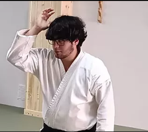

Aikido
El camino de la armonía. Arte marcial no competitivo centrado en la defensa y el desarrollo personal, fundado por Morihei Ueshiba sobre los principios de no violencia.
Ver Aikido
Aikido, Karate Shotokan, Kyusho Jitsu, Defensa Personal, Pilates y Chanbara. Un espacio para la concentración, el respeto y el crecimiento personal, lejos del ruido de un gimnasio convencional.

El Dojo Kobukan es un centro de artes marciales en Inca (Mallorca) homologado por la Real Federación Española de Judo y Deportes Asociados (RFEJYDA) y por el Consejo Superior de Deportes. Mantiene la esencia de un dojo japonés tradicional, donde se practica sin el ruido ni las distracciones de un gimnasio convencional.
El nombre Kobukan enlaza con la tradición del Aikido: Morihei Ueshiba estableció en 1931 su método Aikibudo en el Dojo Kobukan de Tokio, renombrándolo Aikido en 1942 hacia una filosofía de no violencia.
Seis disciplinas impartidas por maestros federados y titulados con décadas de experiencia. Cada una es una vía completa de desarrollo físico, técnico y personal.
El camino de la armonía. Arte marcial no competitivo centrado en la defensa y el desarrollo personal, fundado por Morihei Ueshiba sobre los principios de no violencia.
Ver AikidoEl estilo de karate más extendido del mundo, basado en golpes directos y posiciones firmes. Progresión por cinturones del blanco al negro.
Ver KarateArte ancestral basado en los puntos de presión (Tsubos) y los meridianos de la medicina tradicional china.
Ver KyushoProgramas diferenciados para adultos, mujeres e infantil, a través de la Real Federación Española de Judo (RFEJYDA).
Ver Defensa PersonalEntrenamiento inteligente, seguro y saludable para el equilibrio corporal, la postura y el bienestar integral.
Ver PilatesCombate deportivo con armas acolchadas de espuma flexible, inspirado en el espíritu samurái, para todas las edades.
Ver ChanbaraEl verdadero sentido del Budo no reside en un espíritu de competición, sino en el perfeccionamiento de todos los seres humanos.
El Aikido enseña la resolución de conflictos a través de la no violencia y la comprensión mutua, sin buscar la victoria sobre el adversario.
Unión, armonía y amor. La armonización con el universo y con uno mismo, en palabras del propio fundador.
El espíritu y el aliento. La energía que fluye y se canaliza en cada movimiento sobre el tatami.
La vía, el método. Un camino de desarrollo personal integral que une cuerpo y espíritu sin competición.

No necesitas experiencia previa ni material especial para empezar. Ven a conocer el dojo, prueba una clase de la disciplina que te interese y decide con calma. Te enseñamos las instalaciones y resolvemos todas tus dudas.
Las clases se organizan por niveles y edades, de modo que cada persona avanza a su ritmo, con el acompañamiento de maestros federados.
No. La mayoría de quienes empiezan en el Dojo Kobukan nunca habían practicado artes marciales. Cada disciplina tiene grupos por nivel y se progresa de forma gradual, respetando el ritmo de cada persona.
La Defensa Personal Infantil se recomienda a partir de los 5 años. Se trabaja la psicomotricidad jugando, junto con valores como el respeto y la autoconfianza.
Sí. Puedes venir a conocer el dojo y probar una clase de la disciplina que te interese, sin compromiso. Llama al 629 78 41 72 o escríbenos por WhatsApp para concertar el día.
Estamos en la C/ Poeta Costa i Llobera 21, 07300 Inca (Mallorca), a 100 metros de la estación de tren de Inca. Tienes el mapa y las indicaciones en la página de Ubicación.
El período lectivo es de septiembre a julio. En agosto el dojo permanece cerrado. Los horarios concretos de cada disciplina se confirman al inicio de cada temporada en septiembre.
Sí. El Dojo Kobukan está homologado por la Real Federación Española de Judo y Deportes Asociados (RFEJYDA) y por el Consejo Superior de Deportes. Sus maestros son federados y titulados.
Estamos a 100 metros de la estación de tren de Inca. Contacta con nosotros por teléfono, WhatsApp, email o Facebook.